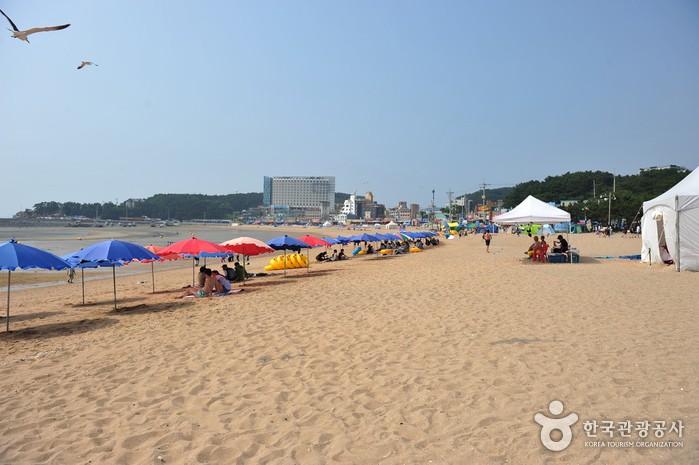
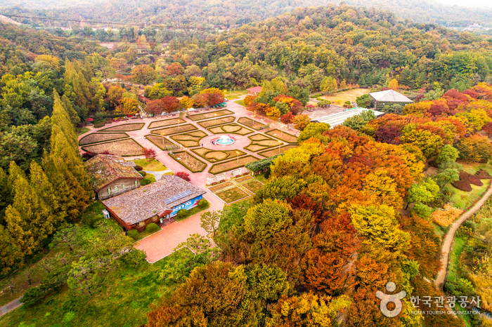
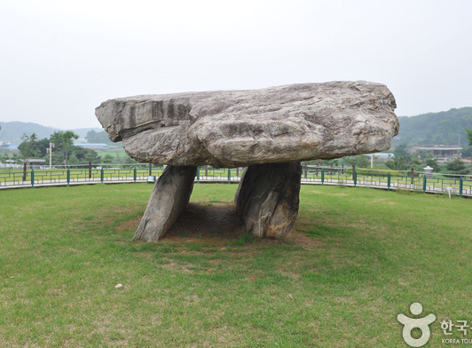
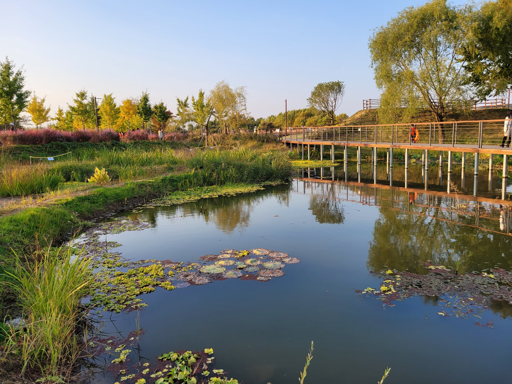

주요 관광지
-

을왕리해수욕장
인천광역시 중구 을왕동에 있는 해수욕장으로, 늘목 또는 얼항으로도 불리며 1986년 국민관광지로 지정되었다. 백사장 길이는 약 700m, 평균 수심은 1.5m로 비교적 규모가 큰 편이다.
-

인천대공원
인천 남동구 장수동에 있는 공원이다. 시민들이 공원을 효과적으로 이용할 수 있도록 생태도우미라는 모임을 만들어 식물교실과 자연학프로그램을 운영하고 있다.
-

강화 고인돌유적
청동기시대의 대표적인 묘제의 하나로서 사적으로 지정되었다. 길이 710cm, 높이 260cm, 넓이 550cm의 커다란 돌을 사용했으며, 형태는 북방식 고인돌로서 상고사와 고대사의 좋은 연구 자료가 되고 있다. 2000년 11월 고창, 화순의 고인돌과 함께 세계문화유산으로 등록되었다.
-

드림파크 야생화공원
인천의 수도권매립지를 시민의 휴식공간으로 활용하는 대규모 생태녹지공간이다. 1992년부터 수도권 쓰레기를 매립하던 곳을 꽃과 나무가 무성한 야생화공원으로 조성하여 수도권 시민들의 산책과 휴식, 환경교육을 위한 장으로 거듭났다.
맛집 및 카페
-

삐삐부인진동왔네
해산물
주소 | 인천 중구 월미문화로 95 -

맛을 담은 강된장
한식
주소 | 인천 강화군 화도면 해안남로 1164 강화군 화도면 사기리 320 -

아매네 카페
카페
주소 | 인천 강화군 길상면 해안남로 471 2층